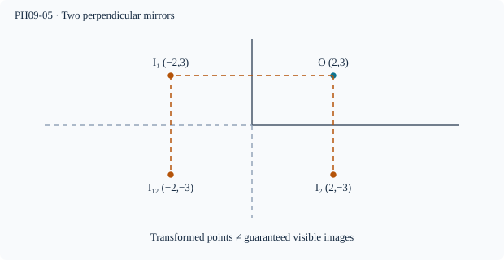

Prerequisite bridge
PH09-02
Before starting, identify the reference frame, directed rays, units and applicable geometric assumptions. Unbound prerequisites remain provisional.
Connected textbook foundation (preserved from PR #5)
6. Two plane mirrors and the visibility of repeated images
Two plane mirrors can reflect rays successively. Some configurations produce multiple virtual images. The popular 360^\circ/\theta-1 counting shortcut for an angle \theta is not universally sufficient without considering integer constraints, object position, orientation, mirror sizes and the visibility of rays. The actual construction should proceed by reflecting rays or virtual object positions successively.
In a ray sketch with two nonparallel mirrors, mark each bounce and check whether the ray physically reaches the second mirror. A construction that places an image behind a wall outside the reflectors' finite extents may not correspond to an actually visible image.
Build and check the model
Repeated plane reflections can be modeled as successive point reflections (unfolded geometry). For two perpendicular reflecting planes, the two single-reflection images and one double-reflection image are distinct for a point off both planes. For other angles, image count depends on angle, object position, and allowed reflection paths. Finite mirrors, occlusion, and observer placement can reduce visible images; counting formal transformed points is not proof every path is visible.
Worked anchor
In the first quadrant with mirrors x=0 and y=0, O=(2,3), formal images are (−2,3),(2,−3),(−2,−3). Their straight-line paths in unfolded space must meet actual reflecting segments in the correct order.
Condition and limiting check
Parallel ideal infinite mirrors can give an unbounded sequence of formal images; real finite mirrors and losses restrict visibility.
Misconception repair
Do not blindly apply 360°/θ−1 to arbitrary geometry.
Reasoning diagram

Self-check before transfer
Reflect (2,4) first in x=0, then y=0. Repeat in reverse order. Are the final points distinct?
Check the reasoning
Both orders give (−2,−4). There is one formal double-reflection image point, though allowable reflection paths still need checking.
The next page contains fresh authored transfer, not an examination reproduction.
Source and figure status
Curriculum pointer D8; candidate scope only. Preserved chapter manuscript. An original subtopic-specific SVG is attached above. Scientific figure and teaching-sufficiency reviews remain HOLD.